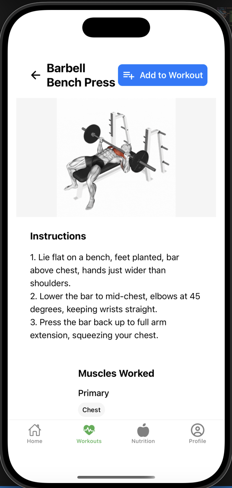
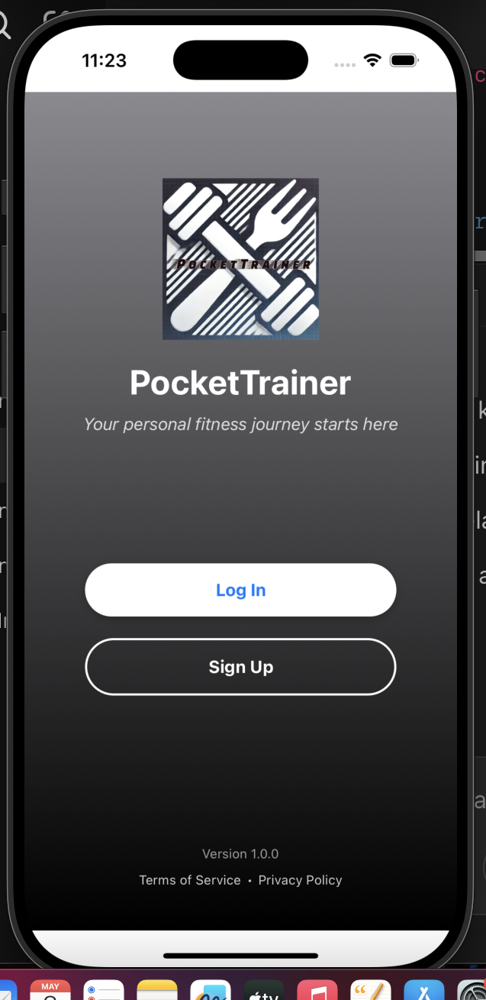
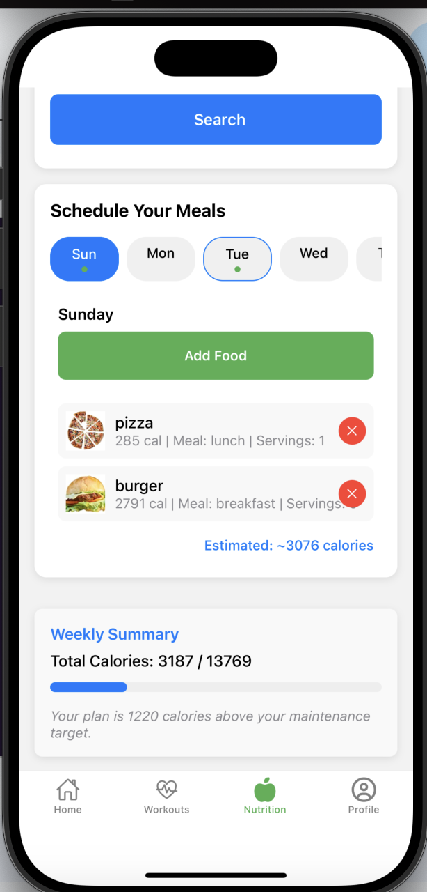

Pocket Trainer
Fitness and nutrition planning in one practical mobile workflow.

Daily training flow
Pocket Trainer helps users create workout and nutrition plans around their goals and preferences without splitting the experience across separate tools.
An interactive SVG muscle diagram lets users explore body regions and find exercises that target specific muscle groups.
- Personalized workout planning
- Nutrition scheduling and summaries
- Interactive muscle selection
- Firebase-backed user data
Mobile screens


Next projectTruLuxe Electric ↗